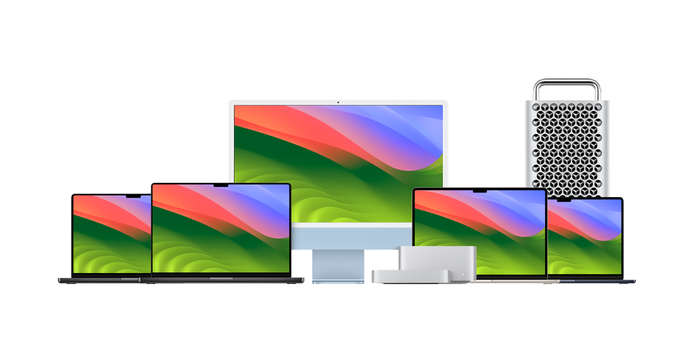

Apple prooduces a wide variety of different models of computers to cater to different need that consumers may have. As of right now the currents models they offer are: the MacBook Air, that is most know for being light and portable, the MacBook Pro, meant for someone who needs a powerhouse on the go, the Mac mini for someone who wants a compact desktop, the Mac Studio for the hardcore creators. Those are just a few of the options that Apple has to offer.
The Apple Macintosh, or Mac, was introduced in 1984 as the first personal computer with a graphical user interface (GUI) and a mouse, revolutionizing the computing industry. The 2000s saw further innovation with products like the MacBook and Mac mini, along with a transition to Intel processors in 2006, since then Apple has come out with their own processors for a more seamless experience. Find more interesting information about Mac's here.
You can find all the options apple currently offers here. On Apple's website they offer all the information you could ever need to make a decision on what Mac would fit you best.
| Model | Price | Specs | 13" MacBook Air | Starting at $1099 | M3 Processor, 8-24 Gbs of ram 18 Hrs of battery life, 256Gb - 1Tb storage |
|---|---|---|
| Macbook Pro 14" | Starting at $1599 | M3,M3 Pro or M3 Max Processors Avaliable 512 Gb - 8 Tb of storage Up to 128 Gbs of Ram 20 Hrs of Battery life |
| iMac 24" | Starting at $1400 | M3 processor Up to 24Gbs of ram Up to 2 Tbs of storage |